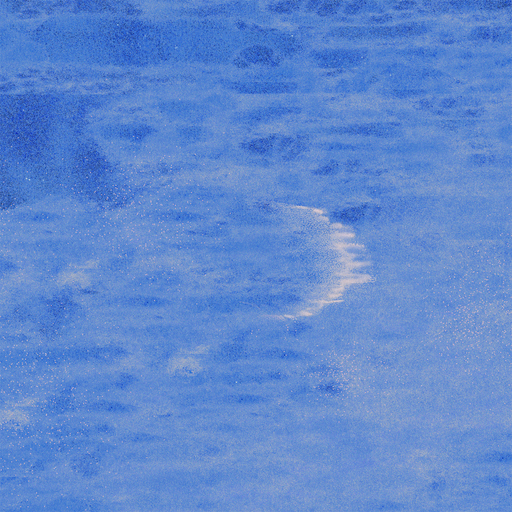

안녕하세요 라보엠입니다.
2주전 주말 라디오에서 가수 초승의 노래 호수를 들은 뒤로 그녀의 호수같은 목소리에 푹빠져있습니다. 노래 호수가 가장 인기가 있지만, 새벽섬, 바다, 마음 앞에서 등 좋은 노래가 너무나도 많습니다. 오늘 소개해드릴 노래는 2021년 발매된 싱글 당신의 바다가 될게요에 담긴 노래 바다입니다. 이 노래는 깊이 있는 가사와 감미로운 멜로디로 많은 이들의 마음을 울리고 있습니다.
초승 바다 노래의 배경
이 노래는 잔잔한 피아노 선율로 시작해 점차 스트링과 어우러지며 풍성한 사운드를 만들어냅니다. 초승의 부드러운 목소리는 마치 잔잔한 파도처럼 듣는 이의 마음을 어루만집니다. 특히 후반부로 갈수록 고조되는 멜로디와 함께 초승의 감성적인 보컬이 돋보이며, 노래의 메시지를 더욱 강렬하게 전달하고 있습니다.
초승 바다 노래 가사
1.
너는 외로운 섬에서
짙은 안개에 점점 흐려지고
익숙한 불행과 어둠에 가라앉을 때면
오랜 내 마음을 띄워 보낼게요
여전히 널 좋아해
하얗게 부서지는 숨도 함께하고 싶어
꾸준히 자라나는 맘은 막을 새 없어요
두려워 말아요
당신의 바다가 될게요
홀로 지새운 모든 밤을 품을 수 있게
파도를 만들어 그대에게 간다면
그대는 모른 척 기다려 줄래요
꼭 안아줄게요
2.
여전히 널 좋아해
무섭게 밀려온 바람도 함께 하고 싶어
밤새워 일렁이는 맘은 멈출 수 없어요
두려워 말아요
당신의 바다가 될게요
아무 걱정 말고 이곳에 함께 해줘요
파도를 만들어 그대에게 간다면
그대는 모른 척 기다려 줄래요
당신의 바다가 될게요
기댈 곳 없는 세상 끝에 함께 해줘요
파도가 없는 저 멀리로 가볼까요
아무도 없는 곳 고요 속에 날 안아주세요
바다의 가사는 시적이면서도 직관적입니다.
네게 바다가 되어주고 싶었어
생각이 많을 때 바다를 보고싶어하는 너라서
그곳에서 모른척 기다려줘
내가 대신 안아줄수 있게
이 구절들은 사랑하는 사람을 위해 바다가 되어주고 싶은 화자의 마음을 표현하고 있는 것 같습니다. 바다는 그 자체로 우리에게 위로가 됩니다. 생각이 많을 때 바다를 찾는 연인을 위해, 화자는 자신이 그 바다가 되어 연인을 품어주겠다는 의지를 나타내고 있는듯 싶습니다. 클라이막스 파도가 없는 저 멀리 부분에서는 시간이 멈춘듯 모든 여주도 멈춥니다.
초승의 EP 앨범 당신의 바다가 될게요
초승의 EP 앨범 '당신의 바다가 될게요'는 앨범 주제로 '위로'를 담고 있습니다. 초승은 이 앨범을 준비하면서 '어떻게 보여야 할까... 무슨 이야기를 담아야 할까...' 많은 고민을 했다고 합니다. 그 결과 '위로'라는 키워드를 중심으로 앨범을 구성하게 되었고, '바다'는 그 중심에 있는 곡이라고 할 수 있습니다.
초승은 '바다' 외에도 '호수', '먹구름', '새벽섬' 등 자연을 모티프로 한 곡들을 다수 발표했습니다. 이러한 곡들은 모두 초승만의 섬세한 감성과 따뜻한 위로의 메시지를 담고 있습니다. 특히 초승은 "어둠 속에서 빛나는 초승달처럼 우리에게 차분한 위로가 되는 음악을 만드는 뮤지션"이라는 평가를 받고 있습니다.

맺음말
'바다'는 초승의 음악적 특징을 잘 보여주고 있습니다. 감성적인 가사, 부드러운 멜로디, 그리고 초승의 따뜻한 목소리가 어우러져 듣는 이들에게 깊은 위로와 공감을 전합니다. 이 노래를 들으면, 마치 넓은 바다를 바라보며 마음의 평화를 찾는 듯한 느낌을 받을 수 있습니다. 앞으로도 초승은 자신만의 독특한 감성으로 많은 이들의 마음을 어루만지는 음악을 계속해서 선보일 것으로 기대됩니다. '바다'를 시작으로, 호수와 함께 초승의 음악 세계에 빠져보세요. 그녀의 노래들은 분명 여러분의 마음에 잔잔한 위로의 파도를 일으킬 거에요.
- 관련 포스팅
초승 호수 노래 가사 - 아름다움을 품은 따뜻한 위로
안녕하세요 한스입니다.오늘은 운전중 라디오에서 너무 아름다운 노래를 듣고 소개해드리려고 합니다. 바로 초승의 노래 호수인데요, 이 곡은 초승의 첫 EP 앨범 꽃들에게의 타이틀곡으로, 2022
umm.la-bohe.me